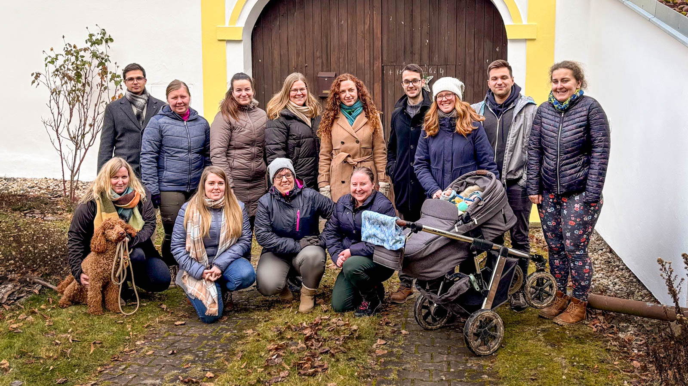

O Absolventském Velehradě
Absolventský Velehrad je čtyřdenní setkání mladých lidí, které se koná každé dva roky na významném poutním místě Velehrad. Akce nabízí společné slavení eucharistie, přednášky, diskuze, workshopy i prostor pro ztišení. Je to příležitost strávit čas s přáteli, poznat nové lidi, myšlenky a perspektivy.
Tématem AV25 bylo V ROVNOVÁZE.
Rozvrh jednotlivých podtémat V ROVNOVÁZE
(2 Sam 11, 1-27; 12, 1-20)
Příběh krále Davida a jeho zneužití moci k usmrcení soka nám představuje příkladný duchovní život v nerovnováze. David, dalo by se říci, „usnul na vavřínech slávy". Stal se králem a zpohodlněl. Už první verš jedenácté kapitoly zmiňuje, že se jednalo o dobu, kdy všichni králové táhli do boje. David ale ne. Zůstal v paláci a nedělal nic. Poměrně neslýchaná skutečnost. Zatímco všichni králové bojují, David, jako král, který měl jet v čele vojska do boje, nikam nejde a fláká se. A právě proto, že není tam, kde má být, narazí na Bat-šebu, ženu Chetity Uriáše, kterou se rozhodne získat.
Francouzský jezuitský kněz Jean-Pierre de Caussade napsal útlou, ale obsahově velmi výživnou knížku s názvem „Odevzdanost do Boží prozřetelnosti: Síla přítomného okamžiku". V knize uvažuje o tom, co prakticky znamená pro křesťana Boží vůle a jak ji rozeznat. Největší milostí pro člověka je dle Caussada přítomný okamžik. Dochází k myšlenkám, že základní Boží vůlí pro náš život je očekávání Boha, že budeme prostě dělat to, co je naší povinností („Jsme jenom služebníci, učinili jsme to, co jsme byli povinni učinit."). Svatost světců nespočívala v tom, že si dělali, co chtěli, ale v tom, že dělali to, co měli a byli tam, kde měli být. Nebyly to kupodivu velké skutky světového rázu, ale prostý život sestávající z běžných činností. Zachovali řád a řád (Bůh) zachoval je. A díky tomu mohl Bůh v jejich životě mocně působit.
Z Davidova příběhu si tedy můžeme odnést několik tipů, jak rozlišit, zda se náš duchovní život nachází v ne/rovnováze. Když svůj život nahlédneme s odstupem, můžeme se sami sebe ptát, jak ne/plníme své povinnosti, zda ne/jsme otrávení, ne/kalkulujeme, zda se ne/nudíme, ne/staráme o druhé lidi … nebo jestli jsme ne/schopni přijmout zpětnou vazbu.
(Žalm 88)
Dalo by se říci, že Žalm 88 je jedním z nejvíce depresivních žalmů, které v Bibli můžeme nalézt. Vyjadřuje naprosté zdrcení člověka, který prožívá těžkou duševní nepohodu a momentálně vnímá svoji situaci jako zcela bezvýchodnou. Tento žalm je také pevnou součástí Breviáře, najdeme ho v modlitbě kompletáře pro páteční den. Proto bychom neměli zapomínat, že nehledě na to, v jak temném životním období se nacházíme, celá církev je s naším utrpením skrze tento žalm spojena v modlitbě a modlí se i za nás. Autor žalmu zde v podstatě popisuje něco jako „duševní smrt". Stav, kdy je člověk opravdu v koncích. Přesto je to jeden z nejvíce nadějných žalmů vůbec. Proto nám ho také Bible předkládá k modlitbě jako vzor. A proč?
Za prvé, žalmista si nic nenalhává. Své vnitřní prožívání popisuje poměrně syrově a naturalisticky. Přiznává si, že absolutně nemá řešení, nemá energii a nemá ani psychickou kapacitu. Neztratit kontakt s realitou ani v nejtěžších chvílích života je klíčovým předpokladem pro to, aby v nich mohl Bůh působit svou uzdravující mocí. Pokud se však uchylujeme k psychickým únikům, kličkám, pokud přemalováváme hnědou na bílou, jenom abychom se nemuseli dívat na to, co nám není příjemné, vnášíme do svého života faleš a vzdalujeme se pravdivosti, kterou zprostředkovává právě ono usazení psychiky v realitě. Bůh může uzdravit jen to, co je upřímné, pravdivé, realistické a skutečné. Tedy všechno, co je nemocné, může být uzdraveno, pokud je to přijato pravdivě a s láskou.
Za druhé, postoj žalmisty. Neuzavírá se sám do sebe se svou bolestí, ale celou záležitost komunikuje a konzultuje s Bohem. Bůh může proměnit a vstoupit jen do toho, co mu otevřeme a předneseme. Dokud vedeme s Bohem rozhovor v modlitbě, neztrácíme světlo na konci jakkoliv temného tunelu. Bůh však působí také v druhých lidech, proto nás může uzdravovat i skrze zprostředkovanou pomoc (duchovní rozhovory, duchovní doprovázení, zpověď, psychoterapie). Psychika v rovnováze proto může znamenat i říct si včas o pomoc a rozprostřít své síly do vícero opěrných bodů.
(1 Král 19, 3-8)
Prorok Eliáš je naprosto vyčerpán – psychicky, ale hlavně fyzicky. Má za sebou náročné konfrontace a přes míru svých problémů zcela zapomíná, že by se měl postarat i o svou fyzickou pohodu, takže se nakonec dostává do bodu, kdy je mu celkově zle a přeje si zemřít. V této fázi nedokáže uvažovat jasně a s nadhledem. A právě do této situace přichází Boží posel, aby mu připomněl, že je nejprve člověkem, který má své potřeby, a až poté prorokem. Člověk vyčerpaný natolik, že nedokáže fungovat ani základním způsobem, je jako prorok nepoužitelný. Proto mu Boží posel připomíná, co je teď pro něj důležité – najíst se a odpočinout si. Až poté může konat velké věci.
Eliášův příběh je velmi povzbudivý. Ukazuje nám totiž, že ani velkým prorokům se nevyhýbaly krize, únava, malomyslnost, vyčerpání, rezignace. Připomíná nám, že máme-li mít sílu starat se o druhé a konat to, co od nás žádá Bůh, musíme se nejprve postarat o sebe. Psychika a tělesno se sice navzájem ovlivňují, ale tento příběh i moderní tzv. „pyramida potřeb" nám ukazují, že nejprve je potřeba se postarat o své základní fyziologické potřeby a teprve poté můžeme pookřát psychicky, popřípadě duchovně.
Naše tělo je svatý chrám a aby se v něm mohla uskutečňovat člověko-služba a boho-služba, nemůže být v troskách. Díky tělu jsme fyzickou součástí světa. Často však svou existenci prožíváme jen ve své hlavě, odtrženi od těla. Tělo s sebou taháme jako nějaký přepravní prostředek, přepínáme své fyzické síly a nestaráme se o ně dobře. Naše tělo se nám stává nástrojem a často i otrokem k dosažení svých cílů, které nosíme v hlavě. Přitom zapomínáme na to, že naše tělo je živý organismus – chrám, který je určen k tomu, aby se stal posvěcením. Skrze nás (a tedy i naše tělo) má do hmotného světa přicházet požehnání. Naše tělo má být nejprve posvěcováno Bohem, abychom pak mohli svou přítomností posvěcovat svět a také druhé lidi, se kterými se setkáme.
(Gen 2, 25-29; Lk 22, 14-20; Sk 2, 42-47; Ef 5, 21-33)
Úryvek z knihy Genesis o stvoření člověka se čte obvykle z perspektivy člověka – jako zpráva o tom, kdo je člověk a jaký je jeho původ. Ovšem v pozadí toho, kým je opravdu člověk, stojí to, kým je sám Bůh. Není to primárně člověk, kdo žije ve vztazích, ale Bůh, který je společenstvím osob. Autor knihy Genesis nemohl mít ponětí o vnitřním trojičním životě Boha, který se církvi rozkryl až o mnohá staletí později, ale přesto tuto skutečnost intuitivně pojmenovává. Zprostředkovává nám poznání, že Bůh Izraele není „single", ale je to Bůh společenský – jeho podstatou je život ve vztazích a ve společenství osob. Člověk je Božím obrazem – to znamená, že je stvořen z lásky a pro lásku a má žít ve vztazích, jako jeho Stvořitel.
Sociální rozměr křesťanského života ukázal sám Kristus – setkával se s chudými, nemocnými, stoloval se sociálně vyloučenými, scházel se ke stolování s učedníky, během stolování v okruhu svých blízkých ustanovil Eucharistii. Společné jídlo a modlitba byly jedním z hlavních rysů prvních křesťanských společenství. Křesťanské komunity se však scházely také k tomu, aby se apoštolové navzájem radili, společně rozhodovali, řešili problémy, přerozdělovali zdroje a aby se o sebe navzájem starali. Církev jakoby přirozeně od Krista převzala štafetu a plynule pokračovala v tvorbě křesťanských společenství, která se postupně rozšířila do celého světa.
Náš společenský život se tedy neodvíjí přednostně od toho, nakolik se setkáváme s lidmi, ale nakolik se setkáváme s Kristem, respektive s celou Trojicí (s Bohem). Podle toho, jak a nakolik rozvíjíme vztah s Bohem Otcem, Duchem Svatým a Kristem, se pak rozvíjí i naše vztahy. Vztah ke každé osobě Trojice je jedinečný a učí nás něco jiného. Máme-li tedy žít zdravé 3D vztahy, podle Božího obrazu, musíme nejprve žít ve vztahu s tím, který je naším obrazem. Svatý Pavel tento princip pochopil velmi dobře. Ve svých listech se vyjadřuje ke vztahům mezi muži a ženami, k manželství, ke svobodnému životu, i ke smíšeným manželstvím. Zvláště v listu Efesanům však zmiňuje, že vztah muže a ženy, pokud má být funkční, musí být zakořeněn v Kristu („V poddanosti Kristu se podřizujte jedni druhým."). Nejprve se tudíž máme ve svém životě podřizovat Kristu, abychom pak byli schopni podřizovat se sobě navzájem ve službě, a ne v nadvládě. Z toho důvodu také svatý Pavel připodobňuje vztah muže a ženy ke vztahu Krista a církve – mají se mít navzájem v úctě a lásce. Proto Pavel přiznává manželství posvěcující sílu – manželství, pokud je v Kristu zakořeněno, je Kristem posvěceno. Toto Pavlovo přirovnání se dá však vztáhnout i na vztahy obecně. Nakolik jsou naše vztahy zakořeněny v Kristu, natolik jsou jím posvěcovány.
Program AV25 (minulý ročník)
- Čajovna a bar
- Adorace s kytarou (22:00-23:00)
- Tichá noční adorace (21:00-07:00)
- Ranní chvály s řeholníky (7:00-7:30)
- Rozcvička (7:15-7:30)
- Moderovaná modlitba (7:45-8:10)
Přednášky, workshopy a aktivity:
- Pavel Pola (Modlitba a solidarita v těžkých časech)
- Jakub Güttner (Kariéra? Rodina? Služba?)
- Finance přednáška (Milan Janás, Karel Nedvěd, Antonín Ettler)
- Speed dating (Jan Bleha)
- Míchání drinků (Jan Vak)
- Kurz fotografie (O. Soukup)
- Osobní rozvoj (H. Macková)
- Filmové exercicie: promítání a diskuze (Petr Hruška)
- Psychologické poradny (13:00-18:00)
- Prezentace projektů (12:30-17:30)
- Čajovna a bar (13:00-16:00)
- Beach volejbal (13:00-14:00)
- Panelová diskuze: Manželství - stojí nám za to? (manželé Pixovi a Vejmělkovi)
- Klára Maliňáková (Obraz Boha „v hlavě" a „v srdci")
- Terezie Tučková (Potřeba těla vztahovat se a být v propojení)
- Marek Drápal (Křesťan a životní prostředí)
- Finance workshop (Milan Janás, Karel Nedvěd, Antonín Ettler)
- Speed dating (Jan Bleha)
- Blind dating (Petr Hofírek)
- Plánování a management (Jakub Holešínský)
- Míchání drinků (Jan Vak)
- Křížová cesta (20:00-21:00)
- Chválový večer (20:30-22:00)
- Táborák (20:00-22:00)
- Fotokoutek (21:00-22:00)
- Adorace s kytarou (22:00-23:00)
- Čajovna a bar (20:00-01:00)
- Celonoční tichá adorace (19:00-07:00)
- Přímluvná modlitba a zpověď (20:00-22:00)
- Ranní chvály (7:00-7:30)
- Rozcvička (7:15-7:30)
- Moderovaná modlitba (7:45-8:10)
- Petr Havlíček (Rovnováha v sobě, rovnováha v jídle)
- Pavel Vosoba (Zrození duchovní osobnosti)
- Michael Martinek (O čem Ježíš nemluvil?)
- Uvaž si květinu (Kytimiti | Michaela Vahalíková)
- Speed dating (Jan Bleha)
- Praktický úvod do modlitby Examen (Petr Hruška)
- Podnikání (Jakub Holešínský)
- Šerm (Robert Waschka, začátek 9:00)
- Lukostřelba (Jan Vak)
- Psychologické poradny (13:00-18:00)
- Prezentace projektů (13:00-14:00)
- Čajovna a bar (13:00-16:00)
- Beach volejbal (13:00-14:00)
- Pavel Pokorný (Kde máme těžiště?)
- Daniela Kucová (Skrze krizi k víře)
- Mluvený projev, prezentování (J. Železný)
- Ludmila Lázničková (Anatomie lásky)
- Pavel Vosoba (Zrození duchovní osobnosti)
- Míchání drinků (Jan Vak)
- Paralela tance a vztahu (Ondřej Chrástecký)
- Ochutnávky piv (P. Hofírek)
- Šerm (Robert Waschka)
- Prohlídka kulturních památek
- Sportovní aktivity
- Projížďka na koloběžkách (O. Kabelka)
- Blind dating
- Čajovna a bar
- Beach volejbal (16:00-17:00)
- Koncert + bar (20:00-21:30)
- Cimbálová muzika + bar (od 21:30)
- Večer modliteb ve stylu Taizé (20:30-22:00, nácvik od 19:45)
- Moderovaná adorace (22:00-23:00)
- Celovečerní tichá adorace (19:00-07:00)
- Ranní chvály (7:00-7:30)
- Rozcvička (7:15-7:30)
- Moderovaná modlitba (7:45-8:10)
- Jana Bieščad (Sexualita: Problém anebo výzva?)
- Svědectví mého života naruby aneb s Bohem není nic nemožné (Martin Zámečník)
- Soft skills - 7 Návyků skutečně efektivních lidí (Pavel Chabiniok)
- Mikuláš Vymětal (Mosty místo zdí: Mezináboženský dialog) (zrušeno)
- Taekwondo (Jiří Polakov)
- Výroba rostlinných jogurtů (Lucie Poppová)
- Modlitba Examen (V. Hladík / V. Hrušková) (9:30-10:00)
Registrace dobrovolníků pro AV27 bude spuštěna 11. 3. 2027. Bližší informace budou zveřejněny na sociálních sítích.
Do týmu hledáme nové členy. Pokud máš chuť přidat se k nám, ozvi se na info@absolventskyvelehrad.cz.
